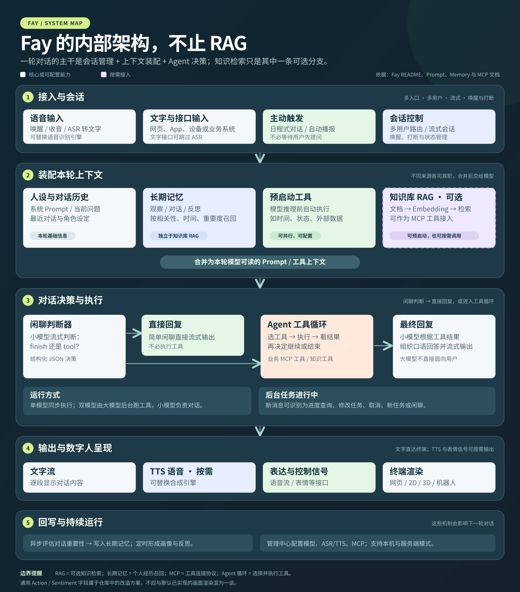

它能做什么？
接收文字和语音，管理会话与长期记忆，按需查询知识或调用 MCP 业务工具，再流式输出文字、语音和终端信号；还支持主动播报。
START HERE / 研究摘要
先读结论，再用架构图看它如何工作。图中 RAG 只是可选的知识检索分支。
接收文字和语音，管理会话与长期记忆，按需查询知识或调用 MCP 业务工具，再流式输出文字、语音和终端信号；还支持主动播报。
一个面向数字人等终端的 Agent 交互编排框架。它负责把“理解、决策、行动、表达”连起来；人物画面由接入终端渲染。
展厅导览、课程讲解、客服查询、虚拟主播与主动播报，以及需要语音和业务能力的机器人或硬件。
可作为 005 实时转写与 004 数字人画面之间的会话和业务中枢。先用 Fay 跑通一条最小交互链，再实测延迟、打断与接口适配。

PROJECT POSITIONING
Fay 将语音识别、模型推理、工具调用、语音合成和终端输出串成一条链路。项目提供数字人驱动接口，但具体的 Live2D、3D 角色或机器人动作由接入端映射和呈现。
了解动作语义改造方案01 / CAPABILITY MAP
从接收问题到完成回应，看看 Fay 在每个环节提供什么。
没有匹配的能力。试试其他关键词。
02 / UNDER THE HOOD
总图见上方摘要；点击步骤，查看输入如何变成有上下文的语音回应。
RAG 之外还有：长期记忆、推理前的预启动工具、连接业务系统的 MCP 工具循环、单 / 双模型协作、后台任务与插话处理、定时主动播报，以及语音、打断、多用户和终端驱动。
先判断是否需要工具；涉及任务时，由模型选择工具、读取结果并继续决策，完成后生成面向用户的回复。
可在模型回答前运行 MCP 知识工具，把检索结果加入本轮上下文，适合需要固定查询的问答场景。
回复逐步输出，经过 TTS 后送往数字人或其他终端；中断机制用于停止过时会话的继续输出。
03 / WHERE IT FITS
选择一个场景，查看它需要哪些能力，以及 Fay 在其中承担的工作。
YOUR PROJECT MAP
已有研究覆盖语音输入、配音、数字人画面和内容发布。Fay 可以成为组织对话、知识与业务工具的中枢。以下是组合设想，接口与效果尚未实测。
管理会话、调用模型和业务工具，检索知识与记忆，输出文字、语音及终端控制信号。
本次研究对象可选声线处理：001 RVC ↗。各项目有能力重叠；是否组合，应以目标体验、接口适配与延迟测试为依据。
04 / WHAT TO BUILD NEXT
以下是基于现有接口提出的产品化方向，属于建议建设项。
将订单、预约、库存、课程等查询封装为 MCP 工具，并明确参数、权限和返回结构。
为检索结果加入来源、更新时间和置信判断，并建立回答质量与召回效果的评估集。
保持动作语义稳定，再分别映射为 Live2D、3D、机器人或纯语音终端的表现。
测量延迟、打断和并发效果；为工具操作建立确认、审计和异常恢复机制。
05 / YOUR DECISION
选择最接近你的目标，得到一条简短的采用建议。这里是选型辅助，最终仍要用真实设备和业务数据验证。
BEFORE YOU ADOPT
体验：首句响应时间、语音打断、噪声环境下的识别效果。
运行：实际设备上的资源占用、并发稳定性和模型服务成本。
许可：仓库使用 GPL‑3.0。商用及分发方式需结合你的产品架构核对许可义务。